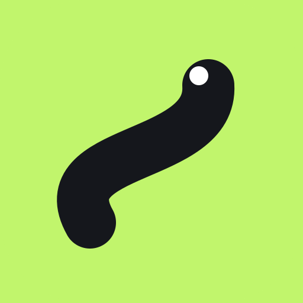
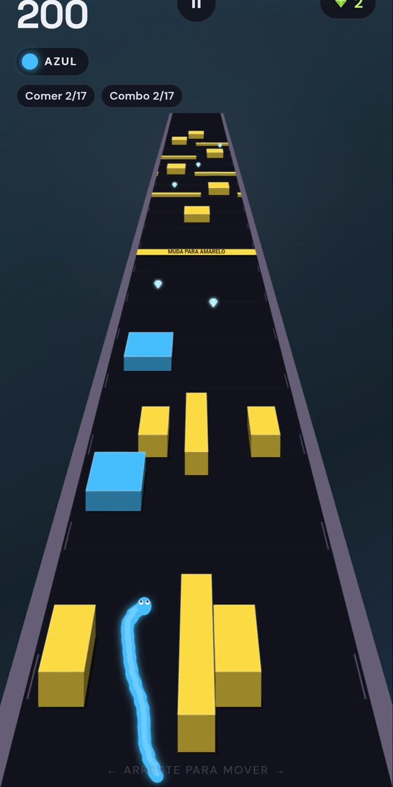
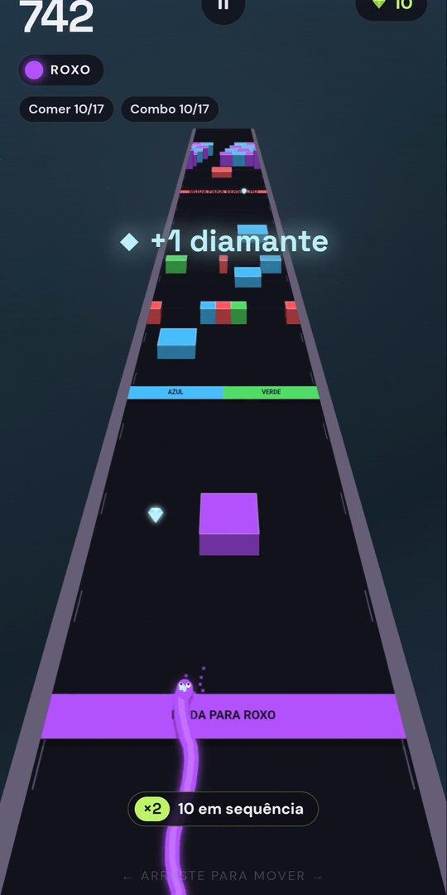
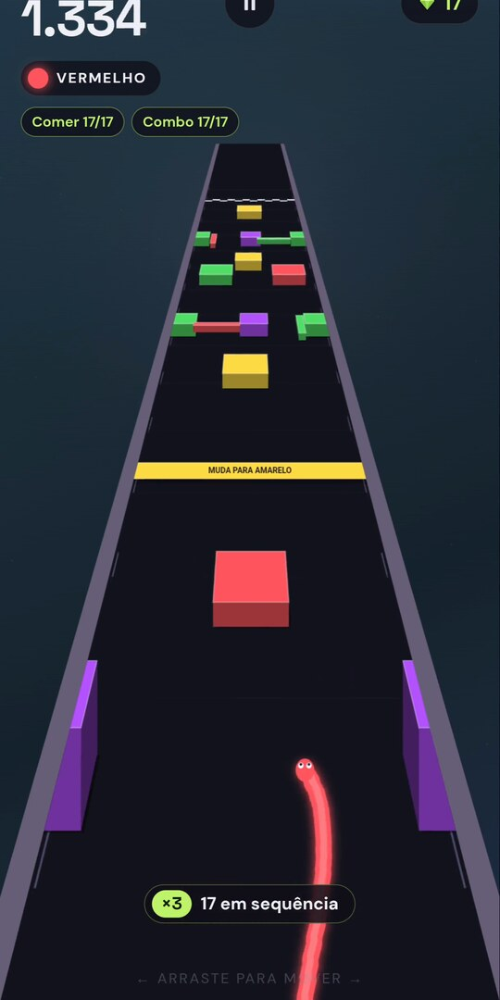
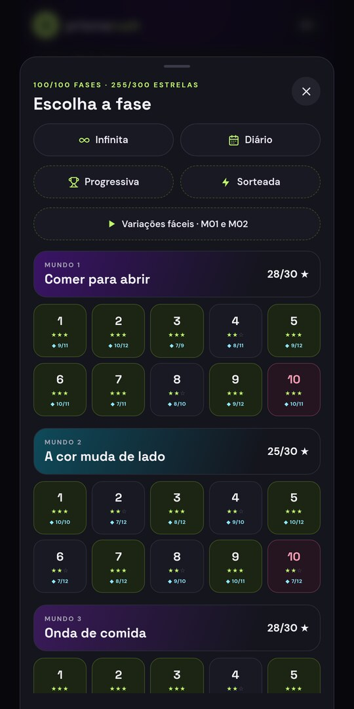
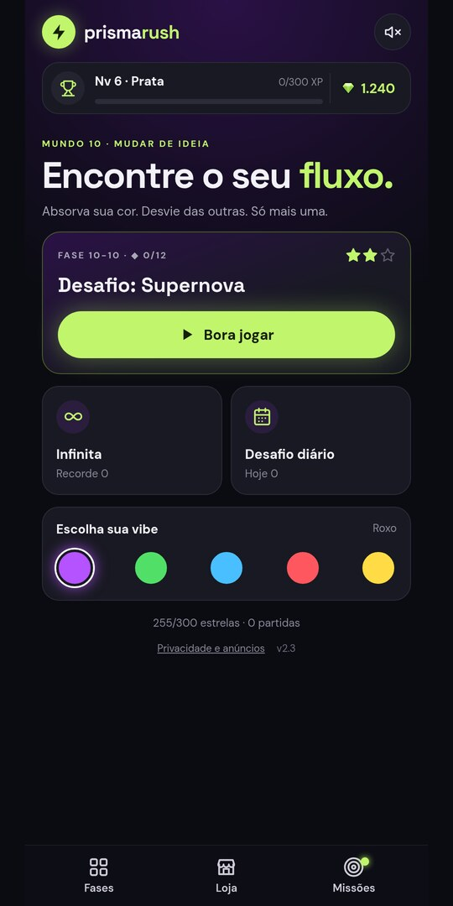
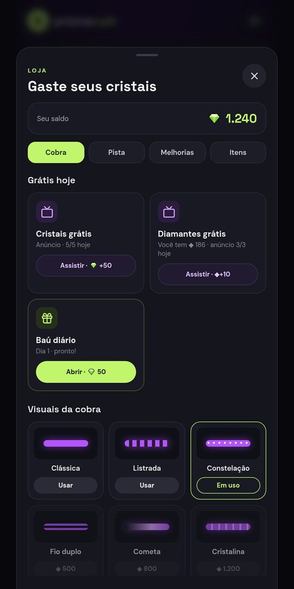

Leia a cor
Coma as peças da sua cor, desvie de todo o resto. Tocar na cor errada termina a corrida.
// arcade de cores · Android
Conduza uma cobra de luz por pistas cheias de peças coloridas: a sua cor é comida, o resto é perigo. A cor muda, as portas pedem decisão e cada fase é um quebra-cabeça de reflexo.







Coma as peças da sua cor, desvie de todo o resto. Tocar na cor errada termina a corrida.
Cada mundo traz uma ideia nova e sobe do fácil ao difícil. Cada fase é sempre igual, então dá para dominar.
Portas de duas cores decidem quanta comida você terá pela frente. Joga de novo para fechar as 3 estrelas.
Escondidos em toda fase: uns no caminho, outros quase impossíveis. Troque por skins e melhorias.
Jogue sem cadastro e offline. O progresso fica no seu aparelho.
O jogo é gratuito e oferece vídeos premiados opcionais, como dobrar os ganhos de uma partida. Sem compras com dinheiro real.